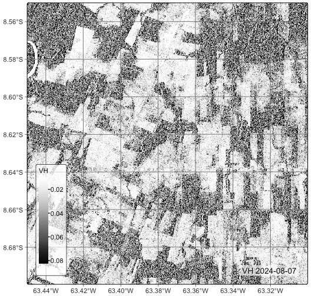
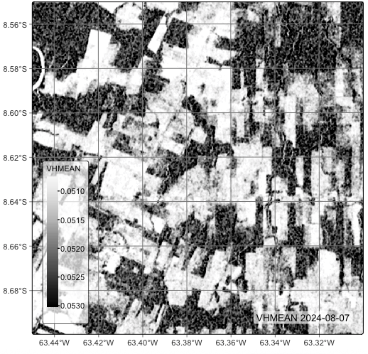
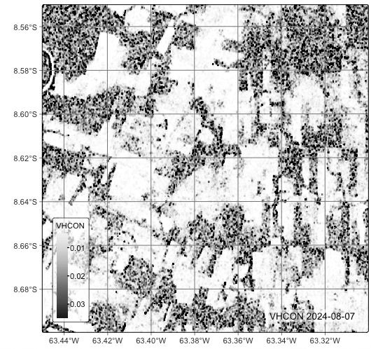

11 Texture operations in data cubes
# load "pysits" library
from pysits import *
from pathlib import Path
# set tempdir if it does not exist
tempdir_py = Path.home() / "sitsbook/tempdir/Python/dc_texture"
tempdir_py.mkdir(parents=True, exist_ok=True)11.1 Introduction
GLCM (Gray Level Co-occurrence Matrix) texture measures capture spatial relationships between pixel intensities. Important measures include contrast, dissimilarity, homogeneity, energy, entropy, correlation, variance, and cluster prominence. These measures are useful in image processing and remote sensing, helping with land cover classification, texture recognition, and medical imaging applications. One key benefit is their ability to capture information about pixel arrangement, even under some lighting changes, making them resilient for object classification tasks. Surfaces such as cropland, urban fabric, tree crowns or tumbling water can share similar reflectance values but differ in their arrangement. Including GLCM features into a classifier therefore improves separability of spectrally ambiguous classes.
11.2 Methods
A GLCM is a 2-D histogram that records how often a pixel with gray level i occurs at a fixed spatial offset (distance d, direction θ) from a pixel with gray level j. It is therefore a second-order statistic: instead of looking at single-pixel values, it captures pairwise relationships. These measures quantify spatial relationships between grey levels in an image and are used to describe texture—patterns of variation in pixel intensity that convey surface properties such as smoothness, roughness, regularity, or granularity. The idea was first formalised by Haralick and colleagues in 1973 [1] and remains one of the most widely used texture descriptors in computer vision, remote sensing and medical imaging.
The sits implementation of GLCM measures is follows the guidelines and equations described by Hall-Beyer [2] and uses the following parameters:
-
cube: a data cube -
window_size: odd number with the size of the sliding window. -
angles: a vector indicating the direction angles in radians related to the central pixel and its neighbors (See details). Default is 0. -
memsize: memory available for processing -
multicores: number of cores available for processing -
output_dir: output directory for the resulting cube -
progress: show progress bar? -
...: GLCM function (see details).
The angles parameter captures the spatial relation between the central pixel and its neighbors in radians, where: - 0 : neighbor on right-side. - pi/4 : neighbor on the top-right diagonal - pi/2: neighbor on top of the current pixel - 3*pi/4: neighbor on the top-left diagonal
Our implementation relies on a symmetric co-occurrence matrix, which considers the opposite directions of an angle. For example, the neighbor pixels based on angle 0 relies on the left and right direction. The neighbor pixels of pi/2 are above and below the central pixel, and so on. If more than one angle is provided, we compute their average.
-
glcm_contrast(): measures the contrast or the amount of local variations present in an image. Low contrast values indicate regions with low spatial frequency. -
glcm_homogeneity(): also known as the Inverse Difference Moment, measures image homogeneity by assuming larger values for smaller gray tone differences in pairs. -
glcm_asm(): the Angular Second Moment (ASM) measures textural uniformity. High ASM values indicate a constant or a periodic form in the window values. -
glcm_energy(): measures textural uniformity. Energy is defined as the square root of the ASM. -
glcm_mean(): measures the mean of the probability of co-occurrence of specific pixel values within the neighborhood. -
glcm_variance(): measures the heterogeneity and is strongly correlated to first order statistical variables such as standard deviation. Variance values increase as the gray-level values deviate from their mean. -
glcm_std(): the standard deviation, which is the square root of the variance. -
glcm_correlation(): measures the gray-tone linear dependencies of the image. Low correlation values indicate homogeneous region edges.
11.3 Example
As an example of using GLCM texture measure, we will take an example of a SAR Sentinel-1 image over a small part of the MGRS tile “20LMR”. We will use a cube with a single date to make processing faster. In the case of a multi-date cube, the texture measure will be computed separately for each band and each date.
We first select a single date cube for a Sentinel-1 image (band “VH”) for a region in Rondonia, Brasil. We then regularize this cube to match a small region of interest inside tile “20LMR”. Using a small ROI allows a better understanding of the effect of texture measures.
# create an RTC cube from MPC collection for a region in Rondonia, Brazil.
cube_s1_rtc <- sits_cube(
source = "MPC",
collection = "SENTINEL-1-RTC",
bands = c("VH"),
orbit = "descending",
tiles = c("20LMR"),
start_date = "2024-08-01",
end_date = "2024-08-12"
)
# define a ROI which is part of the cube to reduce processing
roi <- c(
"lon_min" = -63.45,
"lon_max" = -63.3,
"lat_min" = -8.7,
"lat_max" = -8.55
)
# create an RTC cube regular
cube_s1_rtc_20LMR <- sits_regularize(
cube = cube_s1_rtc,
period = "P12D",
res = 20,
output_dir = tempdir_r,
roi = roi,
multicores = 4
)
plot(cube_s1_rtc_20LMR, band = "VH")# create an RTC cube from MPC collection for a region in Rondonia, Brazil.
cube_s1_rtc = sits_cube(
source = "MPC",
collection = "SENTINEL-1-RTC",
bands = "VH",
orbit = "descending",
tiles = "20LMR",
start_date = "2024-08-01",
end_date = "2024-08-12"
)
# define a ROI which is part of the cube to reduce processing
roi = dict(
lon_min = -63.45,
lon_max = -63.3,
lat_min = -8.7,
lat_max = -8.55
)
# create an RTC cube regular
cube_s1_rtc_20LMR = sits_regularize(
cube = cube_s1_rtc,
period = "P12D",
res = 20,
output_dir = tempdir_py,
roi = roi,
multicores = 4
)
plot(cube_s1_rtc_20LMR, band = "VH")
The plot on Figure 11.1 shows a situation of small forest patches inside an area with much deforestation. If also shows that the forest areas have a grainy and unequal texture. There are areas near the center of the image which show higly degraded forest areas. To try to capture these textural differences, we use GLCM Mean and GLCM Contrast, following recommendations by Hall-Beyer [2]. Each measure captures different aspects of image texture.
The GLCM Mean represents the average grey level of the pixel pairs in the co-occurrence matrix. For a normalized GLCM matrix \(P(i,j)\), the mean is calculated along rows or columns (since in symmetric matrices they are the same):
\[ \mu = \sum_{i=0}^{N-1} \sum_{j=0}^{N-1} i \cdot P(i, j) \]
This measure detects brightness trends in local regions of the image. It tends to be high for brighter areas, and low for darker areas. The GLCM Mean can distinguish regions based on overall tone, e.g., water vs. dry soil, shadow vs. sunlit areas. It is useful for separating classes that have different average intensity values.
# measure GLMC texture and plot the result
cube_s1_rtc_20LMR <- sits_texture(
cube = cube_s1_rtc_20LMR,
VHMEAN = glcm_mean(VH),
window_size = 5,
output_dir = tempdir_r,
multicores = 4,
memsize = 16
)
plot(cube_s1_rtc_20LMR, band = "VHMEAN")# measure GLMC texture and plot the result
cube_s1_rtc_20LMR = sits_texture(
cube = cube_s1_rtc_20LMR,
VHMEAN = "glcm_mean(VH)",
window_size = 5,
output_dir = tempdir_py,
multicores = 4,
memsize = 16
)
plot(cube_s1_rtc_20LMR, band = "VHMEAN")
Figure 11.2 shows that the GLCM Mean enhances the edges and increases the distinction between forest and non-forest areas. Areas of degraded forest, where trees and clear-cut areas are intermingled, are also stressed to produce an intermediate value between that of the trees and clear-cut areas. In theory, this distinction could help the detection of degraded forests.
The GLCM Contrast measures the weighted sum of squared intensity differences between pixel pairs. Contrast quantifies the intensity variation between a pixel and its neighbor, measuring local changes in grey levels. It produces high contrast areas when neighboring pixel pairs have very different grey levels, indicating rough, coarse, or edge-rich texture. Low contrast areas appear when neighboring pixels are similar, indicating smooth, homogeneous regions.
\[ \text{Contrast} = \sum_{i=0}^{N-1} \sum_{j=0}^{N-1} (i - j)^2 \cdot P(i, j) \]
# measure GLMC texture and plot the result
cube_s1_rtc_20LMR <- sits_texture(
cube = cube_s1_rtc_20LMR,
VHCON = glcm_contrast(VH),
window_size = 5,
output_dir = tempdir_r,
multicores = 4,
memsize = 16
)
plot(cube_s1_rtc_20LMR, band = "VHCON")# measure GLMC texture and plot the result
cube_s1_rtc_20LMR = sits_texture(
cube = cube_s1_rtc_20LMR,
VHCON = "glcm_contrast(VH)",
window_size = 5,
output_dir = tempdir_py,
multicores = 4,
memsize = 16
)
plot(cube_s1_rtc_20LMR, band = "VHCON")
In Figure 11.3, one can see that the GLCM Contrast improves our understanding of the internal structure of forest patches. In this region, due to high human activity, many of the forest patches show evidence of degradation. In a dense canopy area, areas of low contrast are to be expected. In low or moderate degradation areas, which is the case in parts of the image, one sees pixels of high and low contrast grouped together. Thus, the GLCM Contrast measure provides further insights on the structure of forests in this area of intense deforestation.
11.4 Summary
GLCM features are a way to include contextual texture cues into image analysis pipelines. When combined with spectral or deep-learning features they consistently boost classification and change-detection accuracy, particularly in heterogeneous landscapes where “what pixels are made of” is not enough—“how they are arranged” makes the difference.